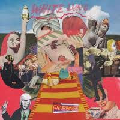

Top Tracks of 2016
By No Ripcord Staff
 16. Car Seat Headrest
16. Car Seat Headrest
 9. Nick Cave & The Bad Seeds
9. Nick Cave & The Bad Seeds
 7. David Bowie
7. David Bowie
 4. Kanye West
4. Kanye West
Votes have been cast and counted, and these are officially No Ripcord’s twenty favourite tracks of 2016. From hip-hop to singer-songwriters, from indie to soul, from experimental teenagers to industry veterans, there’s something for everyone – enjoy!
20. case/lang/veirs
“Atomic Number”
(from “case/lang/veirs” on Anti)
“I’m not the freckled maid / I’m not the fair-haired girl / I’m not a pail of milk for you to spoil.” In the first three lines of their debut collaborative album, Neko Case, k.d. lang and Laura Veirs, in turn, dismiss and ridicule the criticisms often made at female musicians. These ruminations then give way to the sunburst harmonies of the spellbinding chorus, bathing you in a sound that’s somehow simultaneously comforting and thrilling. Case, Lang and Veirs don’t reinvent the wheel on Atomic Number – it’s meat and drink Americana – but it’s done with such effortless panache that you wonder why more performers don’t spend their time truly honing their craft in such a fashion. Atomic Number shows that even with artists who are well respected in their own right, they can still come together to create something greater than the sum of their parts. Joe Rivers
19. Field Music
“Disappointed”
(from “Commontime” on Memphis Industries)
The Brewis brothers would be the first to tell you how uncool they are, but had they been born maybe two decades ago they would’ve been the epitome of “hip to be square” casual cool. See, Disappointed is the absolute fulfilment of what Field Music had been hinting at for over a decade now. A little bit Steely Dan with some Jam & Lewis speckled in there for good measure, the impeccably produced track completely strips off their more progressive tendencies with a classic chorus that’s impossible to ignore and heaps of sophisticated charm. Those who’ve been following the band since their early days knew that they always had that knockout hit in them, and now that they’ve let their more bashful reservations loose the possibilities are exciting and boundless. Juan Edgardo Rodriguez
18. Let’s Eat Grandma
“Eat Shiitake Mushrooms”
(from “I, Gemini” on Transgressive Records)
Norfolk’s reputation as being one of the more eccentric corners of the UK might frequently be used, rather unfairly, as an insult, and yet one couldn’t really imagine Let’s Eat Grandma coming from anywhere else. The precocious duo, formed of seventeen year olds Rosa Walton and Jenny Hollingworth, very much pursue their own muse – picking and choosing sounds, styles and instrumentation that appeals to them, rather than following fashion. Behind its slightly annoying semi-pun of a title, Eat Shiitake Mushrooms is a six-minute sprawling jam, driven by a grinding organ and with a wonky rap interlude (vaguely reminiscent of Debbie Harry’s endearingly nonsensical attempt in Rapture). And it really does seem to be about mushrooms. Think Daphne and Celeste’s kookier cousins (but in an interesting, non-irritating way), and you’re pretty much there. Mark Davison
17. Radiohead
“Burn The Witch”
(from “A Moon Shaped Pool” on XL)
If it sounds like Burn the Witch belongs on Kid A, it's because it may very well have been intended for it. Radiohead have been perfecting this beautiful nightmare since 2000. Although this type of sprawling, goosebump-inducing epic of a song is now iconic of Radiohead, it is certainly a welcome tug back to the excitement of Kid A's release. The track is haunting and utterly mesmerising, something we've come to expect of Radiohead. Orchestral strings back Thom Yorke's lilting voice, muffling sinister lyrics. This is a story of paranoia and terror. Interpretations hardly matter: "This is a low-flying panic attack" could be tacked on to any of history's bouts of mass hysteria. Its timeliness is just a coincidence. Gabbie Nirenburg
16. Car Seat Headrest“Vincent”
(from “Teens Of Denial” on Matador Records)
Vincent was the first reveal out of Car Seat Headrest’s first proper full-length, Teens Of Denial, and Will Toledo had every intention to make a grand impression. The almost eight minute multi-parter tends to weave in and out with a technical precision that contradicts the song’s otherwise improvisational nature, as Toledo stubbornly insists on his existential crisis with his dry observations in check. It set a courageous path for Toledo, who at the time still had to prove himself after releasing a surfeit of Bandcamp releases that sounded too scattershot to really take hold. Vincent was not only more focused, but also exceptionally crafty, and it was the first sign of an artist who may just end up being the poster boy of millennial indie rock for years to come. Juan Edgardo Rodriguez
15. White Lung
“Hungry”
(from “Paradise” on Domino)
Though it’s one of White Lungs cleanest, tightest songs yet, Hungry expresses a messy internal war the self can cause when it hasn’t met its self-appointed standards of excellence. The first line – “You are never safe from yourself / In a dark room, on the top shelf” – sets the stakes anxiously high. The enemy is everywhere when it lies within you – always out of sight, just out of reach, and trailing your every move. This might sound fairly bleak, but Hungry’s excellence lies in how Barber-Way, William, and Vassiliou unleash their most laser-focused songwriting to make this struggle sound empowering and life-affirming. Anthemic chants like, “Baby, you’re weak / Baby, you’re starving,” perfectly blend punk’s bite and pop’s shine to make the emaciated into superheroes, using hunger to claw and sashay their way out of self-imprisonment and into a beautiful, powerful mess. Peter Quinton
14. Radiohead
“Daydreaming”
(from “A Moon Shaped Pool” on XL)
The second of two tracks previewed in the run-up to the release of their ninth studio album, A Moon Shaped Pool, Radiohead’s Daydreaming was a stark contrast to the immediate and hard-hitting Burn The Witch, shared with fans just a few days earlier. After a hypnotic introduction begins a piano arpeggio, over which Yorke sings simple, reflective lyrics: “Dreamers / They never learn / They never learn / Beyond, beyond the point / Of no return”. The track slowly builds through the use of samples and, later, unsettling strings which together bring the song to a confused and exciting climax. Reportedly buried in the song are warped and reversed phrases including, “Half of my life", "I've found my love" and, "Every minute, half of my love", which have led to speculation that the track was written by Yorke following his break-up with his long-term partner. Craig Stevens
13. Savages
“Adore”
(from “Adore Life” on Matador Records)
It's not exactly a revolutionary statement to say it's been a rough year. Between the social upheaval, deaths and sense of a world in chaos, it's difficult to feel optimistic. But in the slow-burning Adore, Savages plant their feet and stare down the darkness. Don't mistake this for a feel-good, "everything's fine" philosophy. Instead, Jehnny Beth, grounded by Ayse Hassan's earthy bass, sings about the lust, shame, guilt and fear that burns us all. And she still proudly exclaims, "I will die maybe tomorrow so I need to say / I adore life." As the song reaches its conclusion, the band gets louder and louder, creating a maelstrom with Beth at the centre. As music swirls around her, she screams out, "I adore life / Do you adore life?" With a band like Savages writing songs like this, it makes it much easier to reply, "Yes!" Joe Marvilli
12. Angel Olsen
“Shut Up Kiss Me”
(from “MY WOMAN” on Jagjaguwar)
Angel Olsen’s roots are barely evident on Shut Up Kiss Me. She’s discussed how she was typecast as another melancholy folk singer in the past, but this track marks the most deliberate step away from that stereotype yet. The lo-fi has gone too; she begins with crisp vocals and a single electric guitar, before the band spring into life with one of the year’s best hooks. The lyrics and the vocal delivery are often tongue in cheek, but Olsen’s frustration at a stagnating relationship is apparent and sincere. She manages to create drama throughout, listing demands as she turns from desperation to anger, peaking with a final chorus accompanied by a haunting wordless refrain. The transition is complete, both in the relationship within the song, but most importantly also for Olsen; from folk archetype to glam rockstar. Matthew Smith
11. Danny Brown
“Ain’t It Funny”
(from “Atrocity Exhibition” on Warp Records)
As well as releasing one of the best hip-hop albums of the year, Danny Brown gifted us with the sonic equivalent of being punched in the head. From the blaring, apocalyptic horns to the pounding synths, Ain’t it Funny is a composition that Brown’s contemporaries wouldn’t dare touch. Thematically, the track chronicles Brown’s struggle with substance abuse, adeptly camouflaged in metaphor and humour until the final verse. “It’s a living nightmare / That most of us might share / Inherited in our blood,” he spits with his high-pitched squawk, a clear allusion to the theory that addiction can be passed on in families. Brown makes no bones about the fact that an addiction can be a one-way ticket to a messy demise, but Ain’t it Funny is also Brown’s testament to those reality-altering highs. Ellis Victoria
10. Radiohead
“True Love Waits”
(from “A Moon Shaped Pool” on XL)
In the past Radiohead weren’t confident enough to commit True Love Waits to tape. It was first debuted as a scrappy acoustic guitar arrangement, signified by the desperate “Don’t leave,” yelled by Yorke. In the last two decades, the band attempted to record the song but couldn’t get the arrangement to standard, and it slowly gained cult status amongst other unreleased tracks. Then finally, it appeared on the track listing of A Moon Shaped Pool. The final version is more contemplative and sombre, the guitar replaced with just a piano and a keyboard playing a minimal electronic riff. Those shouts of “Don’t leave”, now have a mournful tone; it’s vulnerable and exposed in a way few Radiohead songs are. Yorke’s desperate lyrics aren’t masked under waves of instrumentation, but completely out in the open. Fans’ patience has been rewarded with a beautiful, heart-breaking arrangement that has finally found a home. Matthew Smith
9. Nick Cave & The Bad Seeds“Magneto”
(from “Skeleton Tree” on Bad Seed Ltd.)
Each track on Skeleton Tree comprises a crucial element of Nick Cave’s haunting foray into the depths of his own personal grief. Magneto borders on voyeuristic, a deeply intimate expression of his initial reactions to the tragic death of his son Arthur, who was fifteen. “Oh, the urge to kill someone was basically overwhelming,” Cave ruminates. “I had such hard blues down there in the supermarket queues.” On any other Bad Seeds album this would be Cave’s usual caustic wit. However his voice withers, grappling with the fact that this is now his reality. An overdriven bass lurches in the background, threatening and forcing its way through the pensive piano. Even in grief Cave is unpredictable; the lyrics draw parallels to both the death of his son, and his former intravenous drug addiction. Yet both embrace the loss of a person that existed before, and the necessity of lament. Ellis Victoria
8. Michael Kiwanuka
“Black Man In A White World”
(from “Love & Hate” on Polydor)
After a debut album that was passable but, let’s face it, little more than an attempt to make a Bill Withers record, it’s safe to say people weren’t expecting much from Michael Kiwanuka’s follow-up. However, he confounded the critics by returning with a single full of handclaps, anger and righteousness. Black Man In A White World is a protest song that doesn’t shy away from telling it like it is: “I feel like I’ve been here before / I feel that knocking on my door / And I’ve lost everything I had / And I’m not angry and I’m not mad”. He can acknowledge that things have got better whilst reiterating there’s still a long way to go. Additionally, Kiwanuka’s oft-repeated refrain, “I’m a black man in a white world,” becomes almost like a hypnotic mantra, more powerful with each incantation, until it forces its way inside your mind. Joe Rivers
7. David Bowie“Lazarus”
(from “Blackstar” on ISO Records)
David Bowie’s 26th and final studio album, Blackstar, was released two days before his death. At first it was cryptic, emotive and spontaneous, but two days later the album was shed in a much clearer light. Blackstar was David Bowie’s swansong – his parting gift to the world, but one track immediately seemed especially important. The video for Lazarus was downright haunting, showing Bowie writhing in a hospital bed, bandaged and singing about being free. The music of the track itself is simply stunning, with a scrutinising bassline and massive, weighty chords accompanying each heavy line delivered by Bowie. The precise use of brass instruments adds to the heartrending hindsight. There will never be anything like Bowie again, and his death, like his life, can be looked at as a work of art – something only The Starman could achieve. Carl Purvis
6. Car Seat Headrest
“Fill In The Blank”
(from “Teens Of Denial” on Matador Records)
Starting with E and D, the chords of this song are easy to play. What can’t be replicated is the scorching guitars, the wry humour and the cynical worldview. The chorus can lift you from dark moods (“You have no right to be depressed / You haven’t tried hard enough to like it”), granting the space to rage against the machine of your choice. Will Toledo’s songwriting voice is unique, offering contradicting perspectives over the span of the song - a pat on the back followed by a punch in the gut. He’s been self-releasing albums since 2010, but a talent like this can’t be under the radar much longer. Welcome to the majors. Angel Aguilar
5. Flume
“Never Be Like You (feat. Kai)”
(from “Skin” on Future Classic)
“I’m only human, can’t you see / I ma- I made a mistake? / Please just look me in my face / Tell me everything’s okay”. There’s an emotional quality to the lyrics for the chorus of Never Be Like You - the first single from Flume’s second album, Skin - a quality which acts as a direct antithesis to its glitchy, robotic backdrop. Indeed, contrast runs throughout the track, even from the introduction, where sparkly, space-like samples and warm strings conflict against lyrics of regret and pain. The track features the vocals of Canadian singer Kai, who receives a writing credit on the track, and who in the past has collaborated with other artists including Diplo and Childish Gambino. Craig Stevens
4. Kanye West“Ultralight Beam”
(from “The Life Of Pablo” on GOOD Music/Def Jam/Roc-A-Fella)
“I’m tryna keep my faith / But I’m looking for more / Somewhere I can feel safe / And end my holy war.” We could have come back to this line endlessly this past year and only felt farther and farther from resolve. Every gunshot, every obituary, every oppression sent by appointed officials only made our faith feel more fragile, and even through constant social media chaos, the struggle often feels like a personal spat between oneself and a higher authority. Ultralight Beam is the new anthem of this struggle not just because it’s brilliant, but because seriously, who saw this coming? Music’s zeitgeist-inflated balloon of narcissism opens his most polarizing wildcard album with a song that’s both achingly intimate and uproariously huge, his soft warble ricocheting off gospel-mad choruses with not a moment wasted on bullshit. Admit it, this was a god dream come true. Peter Quinton
3. David Bowie
“I Can’t Give Everything Away”
(from “Blackstar” on ISO Records)
This is the final track on Bowie’s last album. It’s not an epitaph but a farewell. The life’s journey may be done, but the spirit’s quest isn’t over. It will always be there to challenge new musicians, spurring them to excel. So who was Bowie, then? The question is unanswerable. The contradictions explain a great deal more than the biographical facts: “Seeing more and feeling less / Saying no but meaning yes / This is all I ever meant.” The sleight-of-hand lyrics are only half the message because Bowie is pouring his heart out to us through his singing. He gives something away after all, the final reveal: that he loved us as much as we loved him. Angel Aguilar
2. Beyoncé
“Formation”
(from “Lemonade” on Parkwood/Columbia)
The very ethos of this song makes me, a white girl, incredibly uncomfortable commenting on it in the first place. What I will say is that watching Queen Bey stomp out on the field to Formation during the Super Bowl halftime show and slowly realising it wasn't just a new catchy club number was a spine-tingling thrill. And though I have felt the deep desire to sing along to its equally empowering and catchy lyrics (we'll never look at hot sauce the same way again), I know that this one isn't meant for me. Instead, I can sit back in awe of the tight choreography, the chilling filmography, and the unapologetic brassiness of this generation's most trenchant pop song while I polish my now outdated brand of feminism back to a shine. Gabbie Nirenburg
1. Mitski
“Your Best American Girl”
(from “Puberty 2” on Dead Oceans)
At first Your Best American Girl, the first single from singer-songwriter Mitski’s fourth album, could be mistaken for a lost track from the mid-90s, with its sensitive acoustic guitar strum giving way to a grungy distorted hook. However, its subject matter marks it out as something a little more unique. The biracial, Japanese-born and raised Mitski is something of an outlier in the traditionally white, male American alternative-rock scene, and Your Best American Girl’s acknowledgment of the difficulties in cross-cultural dating feels like a fresh area for the genre to explore. As resigned and realistic as it is noisy and angry, Mitski’s breakthrough track also has a refreshing sense of maturity. Mark Davison
16 December, 2016 - 00:18 — No Ripcord Staff